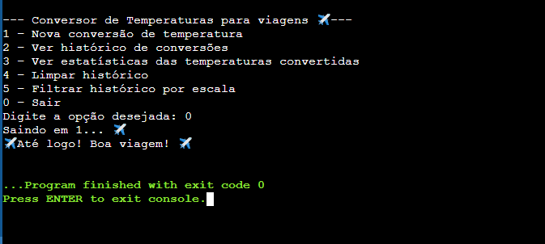
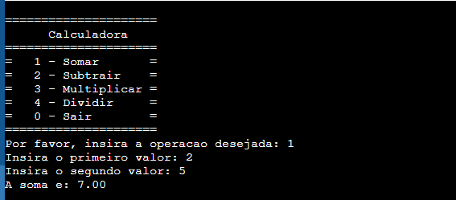
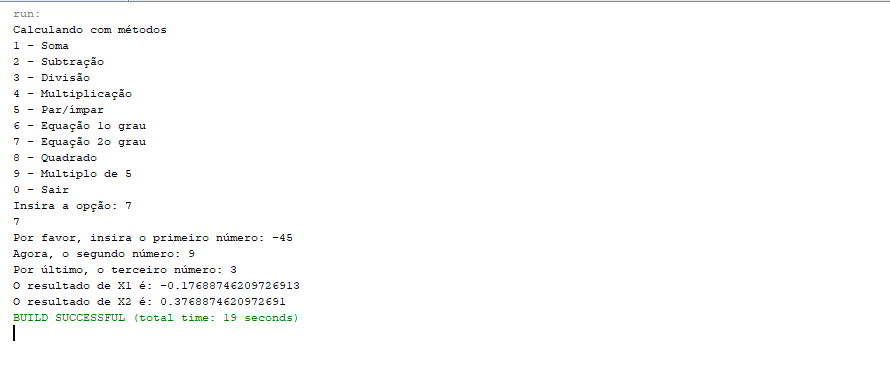
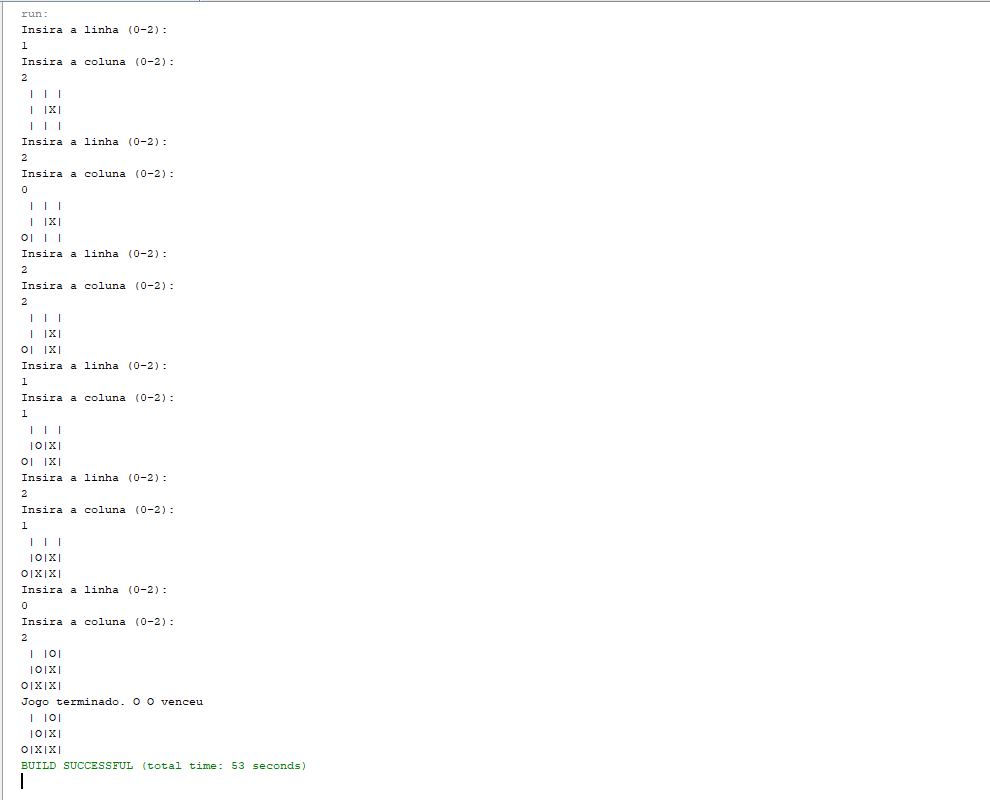
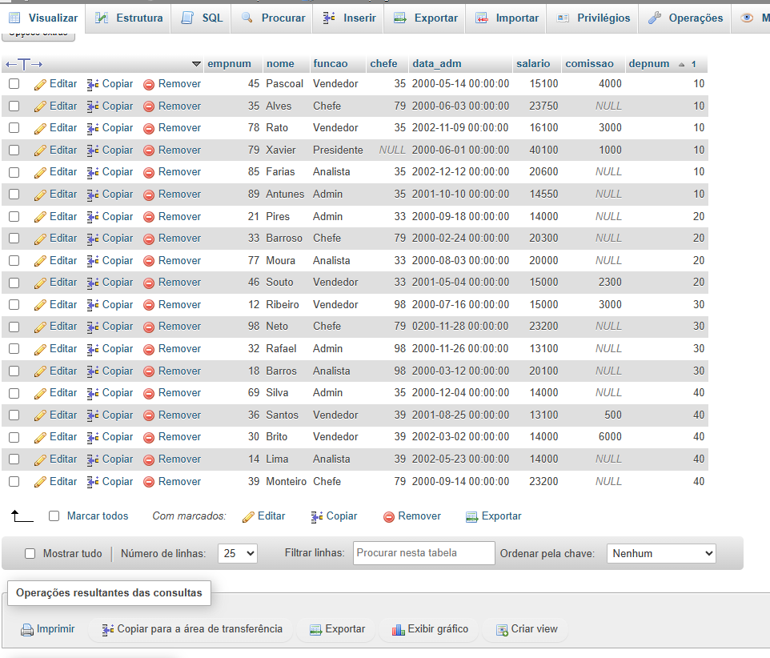
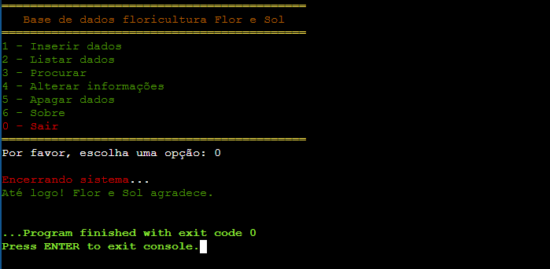

Conversor de Viagem (Python)

Descrição: Aplicação desenvolvida para conversão de temperaturas, focada na experiência do utilizador (UX). Inclui tratamento de exceções para entradas inválidas e armazenamento de histórico de operações.
Tecnologias: Python, Estruturas de Repetição, Listas.
Ver código no GitHubCalculadora e Algoritmos Visuais (C)

Descrição: Conjunto de algoritmos que utilizam ciclos aninhados e sequências de escape ANSI para manipulação visual no terminal. Demonstra noções sobre tipos de dados primitivos e lógica matemática.
Tecnologias: Linguagem C, Ciclos For/While, Switch-Case.
Ver código no GitHubCálculos Matemáticos Modulares (Java)

Descrição: Calculadora avançada que resolve equações de 2º grau (Bhaskara). O projeto destaca-se pela organização modular através de métodos estáticos e reutilização de código.
Tecnologias: Java, Math Library, Scanner, Métodos.
Ver código no GitHubJogo do Galo - Matrizes (Java)

Descrição: Implementação do clássico Jogo do Galo(Tic Tac Toe) utilizando matrizes bidimensionais. Inclui algoritmos de verificação de vitória em linhas, colunas e diagonais, além de validação de jogadas ocupadas.
Tecnologias: Java, Matrizes (Arrays), Lógica de Booleana.
Ver código no GitHubGestão de Dados Empresariais (SQL)

Descrição: Modelação de uma base de dados para gestão de funcionários. Inclui scripts DDL (Criação) e DML (Queries complexas, Updates e relatórios de salários com filtros avançados).
Tecnologias: MySQL / MariaDB, Relacionamentos, Filtros SQL.
Ver código no GitHubSistema de Gestão de Dados (Linguagem C)

Descrição: Desenvolvimento de um sistema de armazenamento de dados persistente em C. O projeto foca-se na manipulação de ficheiros (.txt/.dat) para leitura e escrita, além da implementação de algoritmos de pesquisa e ordenação de registos.
Tecnologias: C, File Handling (I/O), Structs e Algoritmos de Pesquisa.
Ver código no GitHubPlataforma de Interação Social (Full Stack))
Descrição: Criação de uma rede social funcional com sistema de login, publicação de conteúdos, perfil de utilizador entre outras funcionalidades. Integração de front-end dinâmico com JavaScript e processamento de dados no lado do servidor com PHP.
Tecnologias: HTML5, CSS3, JavaScript, PHP e integração com Bases de Dados.
"Nota: O front-end está visível, mas as funcionalidades de servidor (PHP) requerem um ambiente local (XAMPP/WAMP) ou servidor compatível para execução total."
Ver código no GitHub